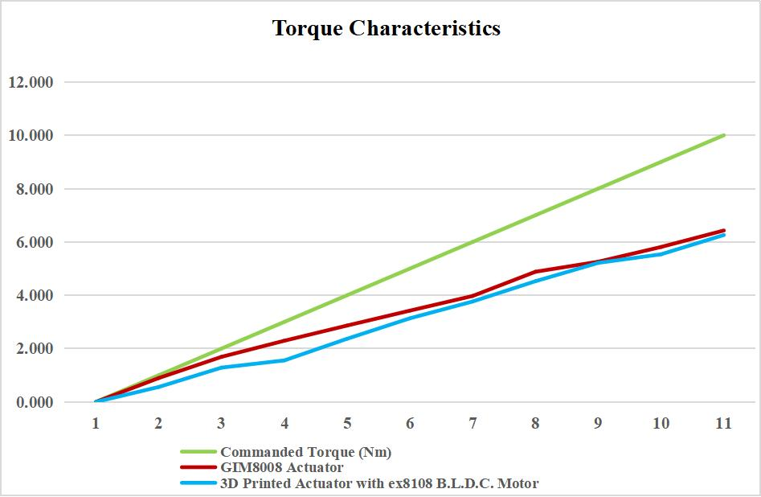
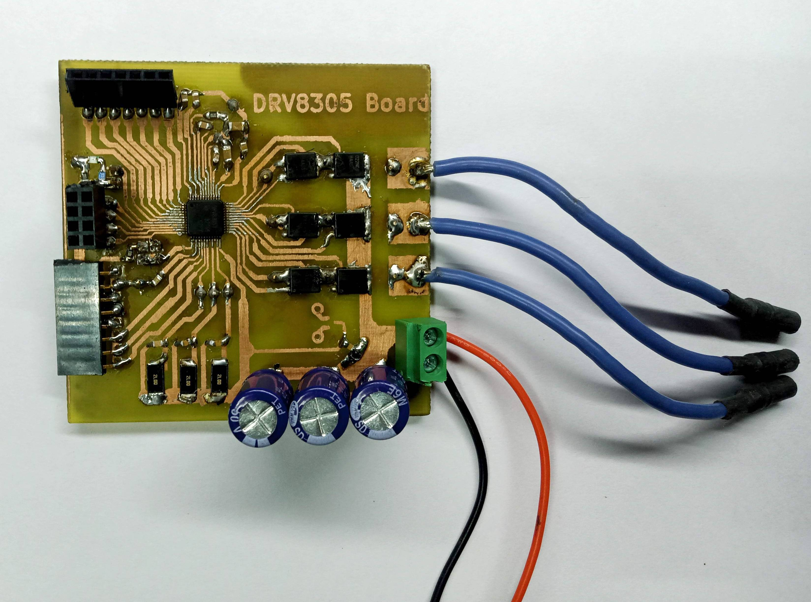

Low-Cost B.L.D.C. Actuator Fabrication using 3D Printing
I designed an affordable and adaptable robotic joint actuator tailored for agility in variety of robotic systems. The actuator utilizes Brushless Direct Current (B.L.D.C.) motors known for their high torque density.
Additionally, it employs Field-Oriented Control (F.O.C.) motor driver technology, enhancing precise control over the motors. This combination of B.L.D.C. motors and F.O.C. control mode not only provides robust torque capabilities but also ensures efficient and agile movement, making it suitable for a variety of applications in robotics namely quadrupeds and robotic arms.Gearbox testing for 3D printed actuator
Torque characteristics comparison with commercial actuator
The graph represents commanded torque vs output torque. Output torque is represented on y-axis
Testing out 2 stage planatery gearbox with smaller BLDC
Reduction ratio 1:9 with base motor - Tarot martin 4005
Fabricated Driver for F.O.C. control of base motor in actuator.

Driver fabrication and closed Loop Configuration test
The newly developed actuator is manufactured at only 25% of the cost of commercially available alternatives. Surprisingly, even with this reduced cost, its performance is comparable to that of commercial actuators.
Completed ✅